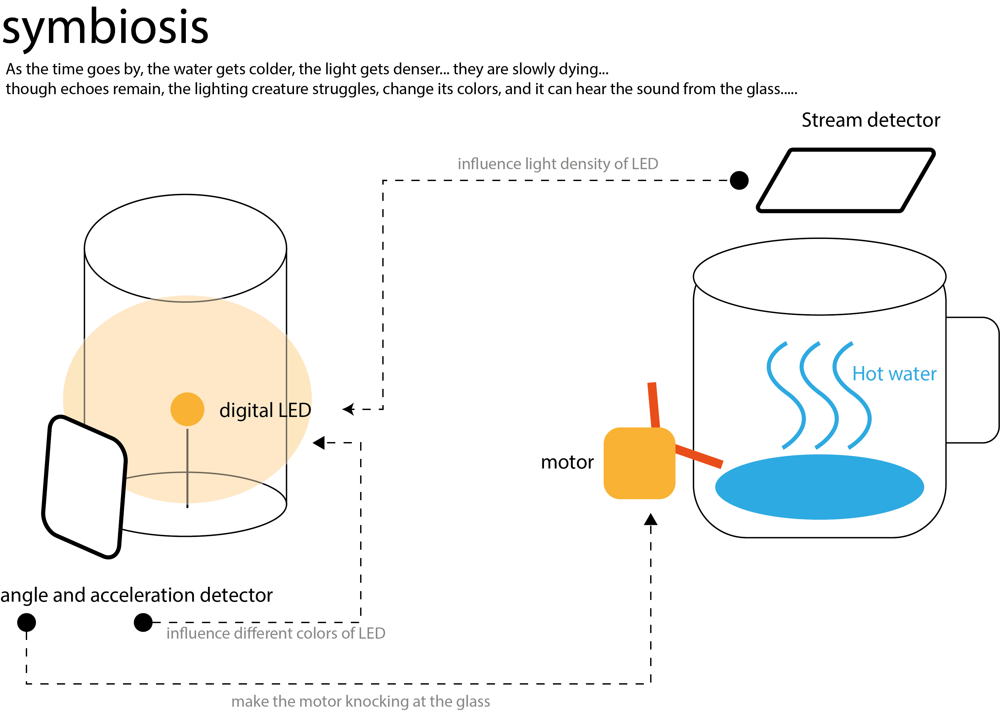

Week 9-11
Concept

PROTOTYPE
Process
Step1: Test the sensor
connect the circuit and test sensors with example code
I used the RGB LED Module to control the color and indensity of light and Six-axis Inertial Motion sensor to detect the movement.
When I tested my motion sensor, my photon board stuck, and the cyan light didn’t breath, the Safe Mode can save this problem.
Step2: make the lightning creature
I put the sensors, the expression organs in the body of the creature, and the breadboard, and its brain - my Photon board outside.
Step3: PROGRAM based on my idea
Make connection
Response to Zhuoyu’s signal, when the heat is gone, the light intensity decreases, and finally the creature runs out of energy.
void setup()
{Particle.subscribe("temperature", myHandler);}
void myHandler(const char *event, const char *data) {
int remote_brightness = atoi(data);
// Zhuoyu's sensor from 3000-2000, map my RGB brightness from the brightest to the darkest
if (remote_brightness < 1750 ){
RGB_Strip.setBrightness(0);
} else if (remote_brightness > 3250 ){
RGB_Strip.setBrightness(255);
}else
{remote_brightness = map ( remote_brightness, 3250, 1750, 255, 0 );
RGB_Strip.setBrightness(remote_brightness);}
}
STATUS
The creature struggles, when it moves suddenly, the color changes.
void startShow(int n) {
switch(n){
case 0: colorWipe(RGB_Strip.Color(255, 0, 0), 50); // Red
break;
case 1: colorWipe(RGB_Strip.Color(0, 255, 0), 50); // Green
break;
case 2: colorWipe(RGB_Strip.Color(0, 0, 255), 50); // Blue
break;
case 3: colorWipe(RGB_Strip.Color(RED_VAL_1, GREEN_VAL_1, BLUE_VAL_1), 50); //Custom colour1: Yellow
break;
case 4: colorWipe(RGB_Strip.Color(RED_VAL_2, GREEN_VAL_2, BLUE_VAL_2), 50); //Custom colour2: Purple
break;
case 5: colorWipe(RGB_Strip.Color(RED_VAL_3, GREEN_VAL_3, BLUE_VAL_3), 50); //Custom colour3: Cyan
break; }
}
Publish
Publish my event about angle of X-axis
void loop() {
Particle.publish("Gyro_X_by_Fuyao", String::format("%.1f", GyroX)); }
Improvement : I can publish event name instead of a sequence of number, so my partner can just identify the status decided by the event, instead of changing char(numbers) into int.
Cloud API
get the real-time data of my creature from API
I really struggled with this step, there are something really important! *******Check the api url first, and use the right device name! Also, don’t forget to create the variable in the program, and use the correct grammar!!!********
void loop() {
Particle.publish("Gyro_X_by_Fuyao", String::format("%.1f", GyroX)); }
void loop() {
float GyroX = accelGyro[3] / 180.0;
StringGyroX = String(GyroX)}
Get the API：https://api.particle.io/v1/devices/??????/angleX?access_token= ?????? . LoadJson from another program
Step5: Visual Idea
When I had trouble getting me and my partner’s real-time data into the visualization code, my partner suggest she could use the physical sounds created by her creature, and the computer audio as input. That is really a great idea. It takes time to transfer physical signal into computer data and transmit this data into another program. Why not using the physical interaction to control this other program directly?